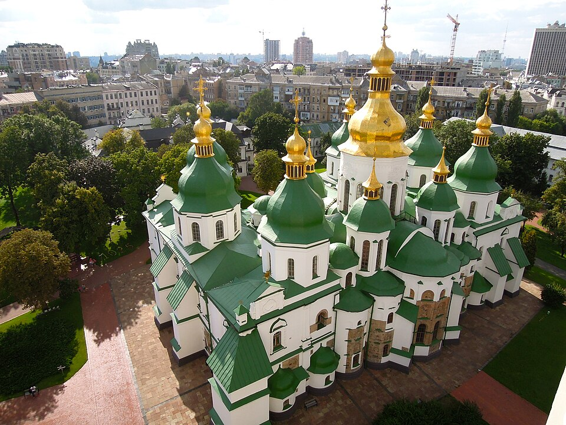
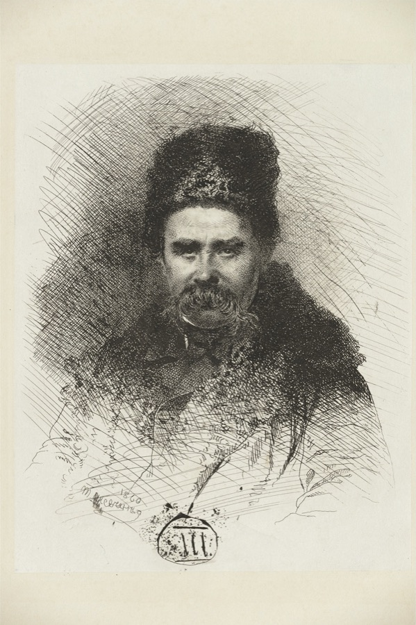
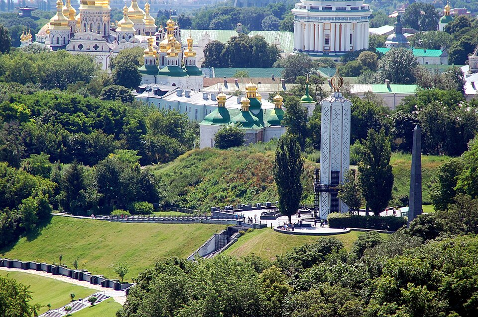
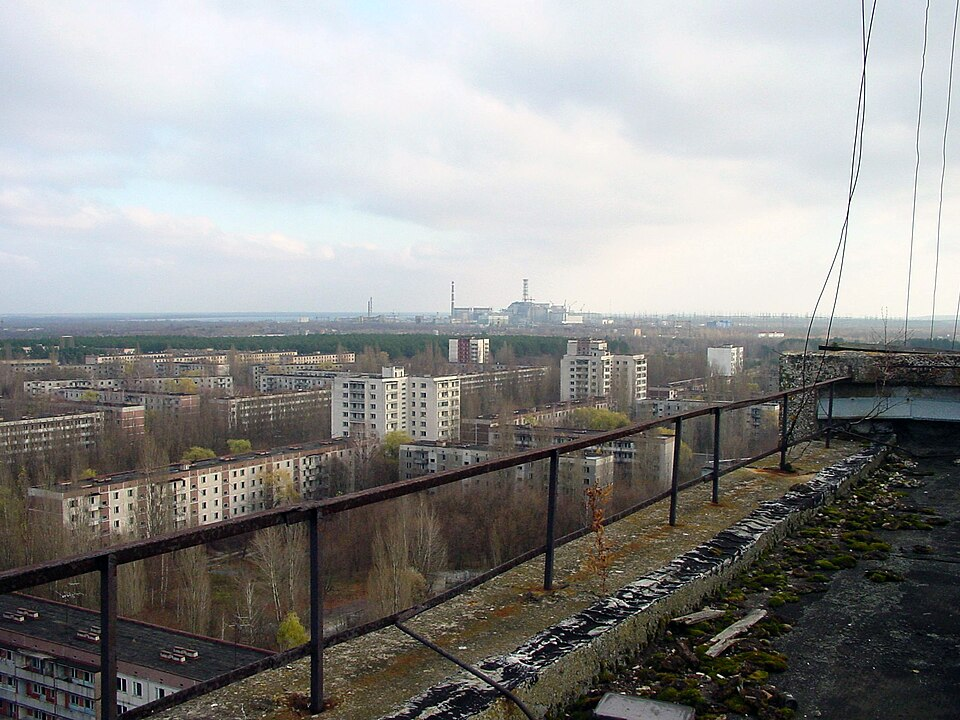
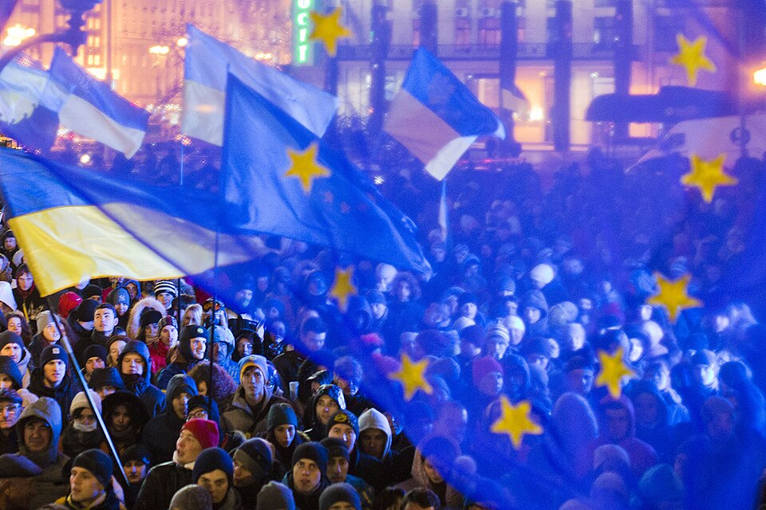
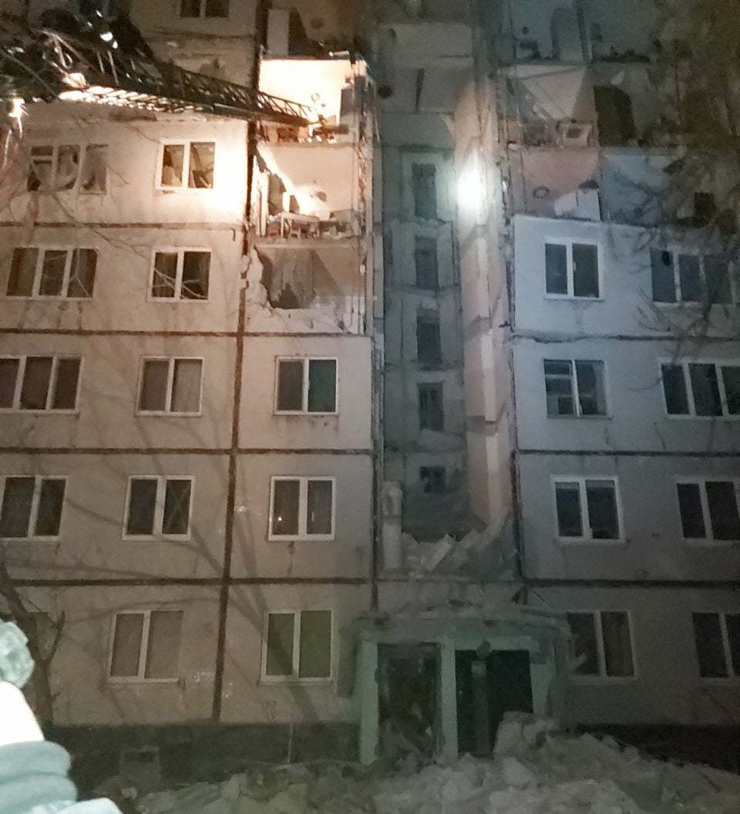
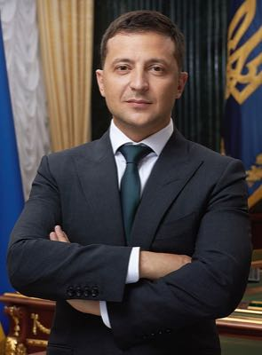
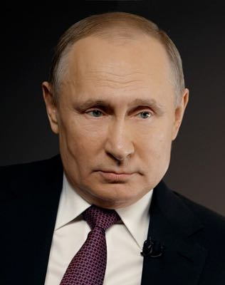
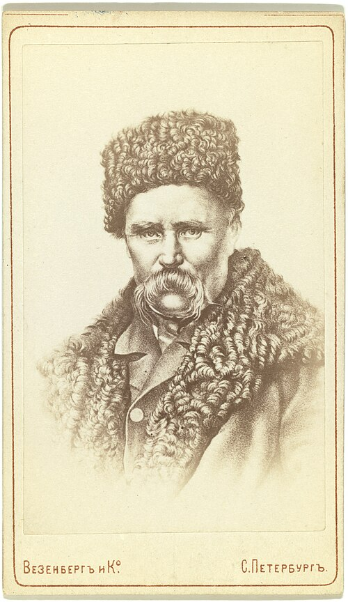
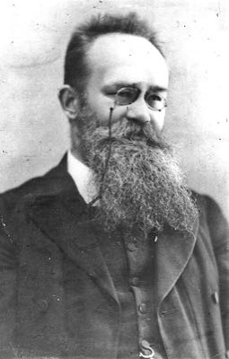

A thousand years of history behind Europe's biggest war.
This conflict is ongoing — last updated July 2026. Jump to where things stand today →
Ukraine is the largest country entirely in Europe. It covers about 603,000 square kilometers — roughly the size of Texas. Before the war, around 44 million people lived there. Ukraine borders Russia to the east and Belarus to the north. It also borders Poland, Slovakia, and Hungary to the west. Romania and Moldova sit to the southwest.Britannica
Ukraine sits between two powerful forces. Russia lies to the east. The European Union lies to the west. For centuries, Ukraine has been pulled in both directions. This tug-of-war is the key to Ukraine's whole story — from the ancient past to the war today.
The right of a country to govern itself without outside interference. Ukraine's sovereignty is at the heart of this conflict.
When one country takes over part of another country and claims it as its own. Russia annexed Crimea from Ukraine in 2014.
Land controlled by a foreign military force. As of July 2026, parts of eastern and southern Ukraine are occupied by Russia.

Over a thousand years ago, a powerful state called Kievan Rus' rose up around the city of Kyiv. Viking and Slavic rulers founded it around 882 AD. It became one of the largest, most advanced civilizations in medieval Europe. Kyiv was its capital — a center of trade, culture, and religion.Britannica
Here's why this matters today. Russian President Vladimir Putin has argued that Ukrainians and Russians are "one people" because they both come from Kievan Rus'. But Ukrainians point out that Kyiv was their capital first. They've had their own language, culture, and identity for centuries. This argument about the past is one reason there's a war in the present.Harvard HURI
Putin says: "Russians and Ukrainians are one people — a single whole." He points to their shared roots in Kievan Rus' as proof. Ukrainians respond: Sharing ancient roots doesn't make two countries the same. England and the United States both trace back to English settlers — but nobody says they're "one people." Ukraine has its own language, its own traditions, and its own right to choose its future.
In 1240, the Mongol Empire invaded. It destroyed Kyiv and scattered its people. Power shifted north to Moscow, which would eventually become Russia. Meanwhile, fierce, independent warriors called CossacksSelf-governing warrior communities on the Ukrainian steppe who fiercely defended their independence. built self-governing settlements in what is now southern Ukraine, along the Dnipro River. The Cossacks are still a powerful symbol of Ukrainian freedom and resistance.Britannica
A medieval state (about 882–1240 AD) centered on Kyiv. Both Ukraine and Russia trace their origins to it — which is part of why they disagree about who it "belongs" to.
Self-governing warrior communities who lived on the Ukrainian steppe. They fiercely defended their independence and became a symbol of Ukrainian identity.

Starting in the 1700s, the Russian Empire swallowed up most of Ukraine piece by piece. In 1783, Catherine the Great seized Crimea. Over the next century, the empire banned the Ukrainian language in schools, books, and public life. The message was clear: be Russian, or be silent.Britannica
But one person refused to be silent. Taras Shevchenko (1814–1861) was a poet and artist. He wrote in Ukrainian when it was illegal to do so. He was born into serfdomA system where a person is legally tied to land they don't own and forced to work it for a landowner, with almost no freedom or rights — very close to slavery.. He was later freed, and became the voice of Ukrainian identity. His poetry is about freedom, the beauty of Ukraine, and resisting oppression. Ukrainian schoolchildren still memorize it today. He's considered the father of Ukrainian literature.Britannica
Imagine if someone told you that your language didn't count — that it was just a "dialect" and you had to speak someone else's language in school, in court, and in every book you read. That's what Ukraine experienced under the Russian Empire. When Shevchenko wrote poetry in Ukrainian, he wasn't just writing poems — he was saying "we exist, and our culture matters."
World War I and the Russian Revolution shook everything apart in 1917. Ukrainians saw their chance. Historian Mykhailo Hrushevsky led them. They declared the Ukrainian People's Republic — their first modern independent state. But it didn't last. The BolsheviksCommunist revolutionaries who took over Russia in 1917 and created the Soviet Union. crushed Ukrainian independence by 1921. They absorbed the country into the USSR.Britannica
Ukraine tries to be free → a bigger power takes over. It happened with the Mongols. It happened with the Russian Empire. It happened with the Bolsheviks.
A pattern that repeats across Ukrainian historyThis pattern helps explain why Ukrainians fight so hard for independence today. They've been trying to win it for centuries.
A group of countries or territories controlled by one powerful ruler or government. The Russian Empire controlled Ukraine for over 200 years.
The right of a people to decide their own government and future. It's one of the key principles of the United Nations.

The Holodomor is one of the darkest chapters in Ukrainian history. It is also one of the least known. Between 1932 and 1933, the Soviet dictator Joseph Stalin engineered a famine. It killed between 3.5 and 7 million Ukrainians. The word "Holodomor" comes from the Ukrainian words for "death by hunger."Britannica
Here's what happened. Stalin's government forced Ukrainian farmers onto collective farmsFarms owned and controlled by the government instead of by individual families.. Then the government seized nearly all the grain those farms produced. The grain was exported or sent to Russian cities while Ukrainians starved. Borders were sealed so people couldn't leave to find food elsewhere. A law known as the "Five Stalks of Grain" law made it a crime to take even a small handful of wheat from a collective farm. The punishment was death or 10 years in a labor camp.HREC
Why did Stalin do this? Historians believe it was deliberate. It was designed to crush Ukrainian resistance to Soviet rule. Ukrainian farmers were the backbone of Ukrainian culture, and the famine destroyed that farming class. It was also meant to punish Ukraine for wanting independence. It was an attack on Ukrainian identity itself.UMN
For decades, the Soviet government denied the Holodomor ever happened. They called it a "natural famine" and punished anyone who said otherwise. The full truth didn't start coming out until Ukraine gained independence in 1991. Today, the Holodomor is recognized as genocideThe deliberate destruction of a group of people, often based on their nationality, ethnicity, or culture. by Ukraine, the United States, Canada, the European Parliament, and more than 20 other countries.Britannica
The Holodomor was hidden from the world for decades. Why would a government try to cover up a famine it caused — and what happens when history gets erased? Can you think of other examples where a government tried to hide what it did?

Before Ukraine could become independent, one more disaster struck. This one would change everything. On April 26, 1986, a reactor exploded at the Chernobyl nuclear power plant, just 100 km north of Kyiv. It caused the worst nuclear disaster in history. The Soviet government tried to cover it up, waiting days to evacuate nearby towns. The fallout spread across Europe.Britannica
Chernobyl didn't just poison the land. It poisoned Ukrainians' trust in the Soviet government. People saw that Moscow cared more about hiding the truth than protecting lives. The disaster fueled the independence movement. If the Soviet Union couldn't even keep its people safe, why stay?
The Soviet Union began to collapse in 1991. Ukraine held a referendumA nationwide vote where everyone answers the same yes-or-no question. on one question: should Ukraine be independent? 92% voted yes. Many people in Crimea spoke Russian and felt close ties to Moscow. Even there, a majority voted for independence. On December 1, 1991, Ukraine became a free country for the first time in modern history.Britannica
But freedom was messy. A small group of super-rich businessmen called oligarchs grabbed control of industries like steel, energy, and media. Corruption was everywhere. Ordinary Ukrainians struggled while the wealthy got richer.CFR
There was also a big identity question. Western Ukraine had historically been part of Poland and Austria. People there tended to look toward Europe. Eastern Ukraine was closer to Russia and had many Russian speakers. People there had closer ties to Moscow. This wasn't a clean split. It was more of a gradient, like a color slowly changing across the map. But it mattered politically. Ukraine's leaders had to choose: move closer to Europe, or stay close to Russia?
A vote where everyone in a country gets to answer a single important question, like "Should we be independent?" Ukraine's 1991 referendum was one of the most decisive in history.
A very wealthy person who uses their money to influence politics. After independence, a handful of oligarchs controlled much of Ukraine's economy.

In 2004, Ukraine held a presidential election. The pro-Russia candidate, Viktor Yanukovych, was declared the winner. But the election was full of fraud. Thousands of ballots were faked, and voters were intimidated. Ukrainians were furious.Britannica
Hundreds of thousands of people flooded the streets of Kyiv wearing orange, the color of the opposition candidate. They camped out in freezing temperatures for weeks, demanding a fair election. It worked. The courts ordered a new vote. The pro-Western candidate, Viktor Yushchenko, won.
But hope faded fast. Yushchenko's government struggled with the same old problems: corruption, infighting, and economic trouble. By 2010, Ukrainians were so frustrated that they elected Yanukovych as president again — the same man from the rigged election, but this time legitimately.
In November 2013, Yanukovych was about to sign a deal with the European Union. It would have meant better trade, more cooperation, and a step toward joining Europe. Most Ukrainians supported it. But at the last minute, Yanukovych backed out under heavy pressure from Russia's Vladimir Putin. He chose a deal with Russia instead.Britannica
Ukrainians exploded with anger. Within days, hundreds of thousands of people filled Maidan — Independence Square — in central Kyiv. They weren't just protesting one decision. They were demanding a future in Europe, an end to corruption, and a government that listened to its people.
The protests lasted through a brutal winter. The government responded with violence. Riot police beat protesters, and snipers shot into the crowd. Over 100 protesters were killed. They are remembered as the "Heavenly Hundred." In February 2014, Yanukovych fled to Russia. Ukraine's parliament voted to remove him from power. A new, pro-European government took over.CFR
The Euromaidan revolution was the turning point. Putin saw Ukraine choosing Europe over Russia — and he decided that was unacceptable. Within weeks of Yanukovych's fall, Russian soldiers appeared in Crimea. The war had begun.
A group of 27 European countries that work together on trade, laws, and policy. Ukraine applied to join the EU in 2022, and became a candidate in 2023.

Just weeks after Yanukovych fled, soldiers in unmarked green uniforms appeared across Crimea, a peninsula in southern Ukraine. Russia called them "local self-defense forces." Everyone else called them what they were: Russian soldiers without insignia, quickly nicknamed "little green men." They seized government buildings, military bases, and airports.Britannica
Russia then held a rushed referendum in Crimea. It was widely condemned as illegal. Russia declared Crimea part of Russia anyway. It was the first time since World War II that a European country had annexed part of another country by force.
A month later, Russia-backed separatists seized government buildings in eastern Ukraine's DonbasA region in eastern Ukraine made up mostly of the Donetsk and Luhansk areas. region. They declared independence from Ukraine. A grinding war began — trenches, artillery, snipers. By 2022, over 14,000 people had been killed in the Donbas conflict.CFR
At 5:00 AM on February 24, 2022, Russia launched a full-scale invasion of Ukraine. Over 200,000 troops attacked from three directions: north toward Kyiv, east into the Donbas, and south from Crimea. Missiles hit cities across the country. It was the largest military attack in Europe since World War II.BBC
Most experts expected Ukraine to fall within days. They were wrong.
Battle of Kyiv (February–March 2022): Russia sent a massive convoy of tanks toward Kyiv. Russia expected to capture the capital quickly. Ukrainian forces fought back fiercely, destroying the convoy piece by piece. The U.S. offered to evacuate President Zelenskyy. He refused with words that became famous around the world: "I need ammunition, not a ride." Russia retreated from Kyiv in early April.
Bucha massacre (April 2022): Russian troops withdrew from the suburbs of Kyiv. The world saw what they had left behind. In the town of Bucha, evidence of mass killings, torture, and violence against civilians shocked the world. Satellite images showed bodies lying in the streets. Russia denied responsibility, but the evidence was overwhelming.BBC
Satellite images showed bodies lying in the streets. Russia denied responsibility, but the evidence was overwhelming.
The Bucha massacre, April 2022Stories like Bucha are hard to read. Why do journalists and investigators keep documenting things like this instead of looking away? What do you think happens to the truth of an event like this if no one writes it down?
Siege of Mariupol / Azovstal (February–May 2022): Russian forces surrounded the port city of Mariupol and bombarded it for over 80 days. The last Ukrainian defenders held out inside the Azovstal steel plant, a massive industrial complex with underground tunnels. They became a symbol of resistance before eventually surrendering in May 2022.
Kherson liberated (November 2022): In a major victory, Ukraine recaptured the city of Kherson — the only regional capital that Russia had managed to take. Russian forces retreated across the Dnipro River.
Zaporizhzhia nuclear plant: Russian forces occupied Europe's largest nuclear power plant early in the invasion. The plant has been a constant source of worry — shelling near a nuclear reactor could cause a disaster like Chernobyl.IAEA
Actions during war that violate international law, like deliberately killing civilians, torturing prisoners, or attacking hospitals. Many organizations have accused Russia of committing war crimes in Ukraine.
Punishments that countries use against other countries, usually by blocking trade or freezing bank accounts. The U.S., EU, and others imposed heavy sanctions on Russia after the invasion.
This situation is still developing. Always check a trusted news source for the very latest.
Four years after Russia's full-scale invasion, the war is still going. The front lines have barely moved in months. Russia controls about 20% of Ukraine's territory — roughly 116,000 square kilometers. That's an area about the size of Ohio.CSIS Most of this land is in the east, in the Donbas region, and in the south, in Crimea and parts of Zaporizhzhia. Fighting happens every single day along a front line that stretches hundreds of miles.
The pace of fighting has slowed down a lot in 2026. Russian forces seized about 622 square kilometers of Ukrainian land in the first half of 2026. That's way down from the 2,190 square kilometers they took in the first half of 2025. Ukraine also took back some small bits of land. Once you subtract that, Russia's net gain for the first six months of 2026 was only about 97 square kilometers. It came at a huge cost in Russian casualties.Al Jazeera As of July 2026, the front lines remain largely where they were in early 2026. Neither side has been able to make a big breakthrough.
Many countries have tried to end the war through peace negotiationsTalks where both sides try to agree on a deal to stop fighting.. President Trump took office in January 2025, and the U.S. pushed hard for a deal. Leaders have kept talking through 2026. But so far there is still no ceasefire and no final agreement.
In January 2026, a group of 35 countries called the "coalition of the willing" met in Paris. France and the United Kingdom said they would send troops to Ukraine to help keep the peace if a ceasefire is reached. The U.S. said it would back security guarantees for Ukraine. It also said it would help set up a system to monitor a truce.ABC News The next month, officials from the U.S., Ukraine, and Russia sat down together for two days of talks in Geneva, Switzerland, after earlier rounds in Abu Dhabi. They made some progress on smaller issues, like how prisoner exchanges might work. But they got stuck on the biggest question of all: territory.Kyiv Independent Talks stalled after that. A U.S. deadline to reach a deal by June came and went. Since then, Russia and Ukraine have kept swapping prisoners of war and the bodies of soldiers killed in battle. There were pauses around Orthodox Easter in April and Russia's Victory Day holiday in May. But those exchanges haven't led to a wider ceasefire.Euronews
On June 4, 2026, President Zelenskyy published an open letter to Putin. In it, he proposed a ceasefire during negotiations, an "all-for-all" prisoner exchange, and a face-to-face summit in a neutral country.Kyiv Independent As of this summer, Russia still says it's open to negotiating — but not to stopping the fighting first. Russia wants to keep the land it has taken. Ukraine says it should not have to give up land that was seized by force. Ukraine also says any ceasefire should start before a bigger deal is worked out. That disagreement is still the main thing blocking a deal.Türkiye Today
An agreement to stop fighting, at least temporarily. A ceasefire is not the same as a peace deal — it just means the guns go quiet while leaders keep talking.
A group of countries that agree to work together on a specific goal, even if not all countries in the world agree. In this case, 35 nations willing to help enforce a peace deal in Ukraine.
The Donbas and Crimea remain the core obstacles to peace. Russia says these areas are now part of Russia. Ukraine — and most of the world — says they are still Ukrainian land, taken illegally. This is a problem no one has solved yet. Any peace deal will have to answer a very hard question: who keeps the land?
The numbers are staggering. As of early 2026, about 5.9 million Ukrainians have fled the country as refugees. Another 3.7 million are displacedForced to leave home but still living inside your own country, unlike a refugee who leaves the country entirely. inside Ukraine. In total, about 10.8 million people need humanitarian help.UNHCR, 2026
Russia has repeatedly attacked Ukraine's power grid, leaving millions of people without heat or electricity during winter. Schools have been destroyed. Children study in bomb shelters or online. The World Bank estimates that rebuilding Ukraine will cost around $588 billion — one of the most expensive reconstruction efforts in history.CSIS
This war has changed the world in ways you can feel even here. Ukraine and Russia are two of the world's biggest grain exporters. The war disrupted grain shipments, and food prices rose around the globe. Poorer countries were hit the hardest. Energy prices spiked too, because Europe had relied on Russian natural gas.
The war also pushed countries to take sides. Finland and Sweden had stayed neutral for decades. Both joined NATOA military alliance of countries in North America and Europe that agree to defend each other if one member is attacked. after the invasion. Russia's invasion is exactly what Putin said he wanted to prevent. But his actions made NATO bigger and stronger.AP News
See the live front lines: The Institute for the Study of War (ISW) keeps an updated interactive map showing exactly where fighting is happening. View the ISW StoryMap →
What would a fair peace deal look like — and who gets to decide? Should Ukraine have to give up land that was taken by force? What if giving up that land is the only way to stop the fighting? These are the questions world leaders are struggling with right now.
From its founding over a thousand years ago to today's ongoing war, here's Ukraine's story in key moments.
Viking and Slavic rulers establish a powerful state centered on Kyiv — one of the largest civilizations in medieval Europe.
The Mongol Empire sweeps through, devastating Kyiv and ending Kievan Rus'. Power shifts north to Moscow.
Self-governing Cossack communities thrive on the Dnipro River. They become a lasting symbol of Ukrainian independence and resistance.
Catherine the Great annexes Crimea. Over the next century, Russia bans the Ukrainian language and suppresses Ukrainian culture.
After WWI, Ukraine briefly declares independence under Mykhailo Hrushevsky. Crushed by Bolsheviks and absorbed into the Soviet Union.
Stalin's government seizes grain from Ukrainian farms, causing a famine that kills 3.5 to 7 million people. Now recognized as genocide by 20+ countries.
Ukraine becomes one of the bloodiest battlegrounds of WWII. An estimated 7 million Ukrainians die — soldiers, civilians, and over 1.5 million Jewish Ukrainians in the Holocaust.
A reactor explodes at the Chernobyl plant near Kyiv — the worst nuclear disaster in history. The Soviet cover-up fuels Ukraine's independence movement.
92% vote yes in a referendum. Ukraine becomes an independent country for the first time in modern history.
Mass protests against a rigged election. Hundreds of thousands fill the streets of Kyiv wearing orange, demanding democracy.
Hundreds of thousands protest after the president rejects an EU deal under Russian pressure. Over 100 protesters killed ("Heavenly Hundred"). President flees to Russia.
Russian soldiers in unmarked uniforms seize Crimea. A rushed, illegal referendum follows. The first forced annexation in Europe since WWII.
Russia-backed separatists seize territory in eastern Ukraine. A war begins that will kill over 14,000 people by 2022.
Russia launches the largest military attack in Europe since WWII. Over 200,000 troops invade from three directions. Ukraine defends Kyiv and refuses to surrender.
After Russian forces withdraw from Kyiv's suburbs, evidence of mass killings and torture of civilians in Bucha shocks the world.
Ukraine recaptures Kherson — the only regional capital Russia managed to take. A major symbolic and strategic victory.
Trilateral talks in Geneva and a Zelenskyy peace letter in June 2026 kept diplomacy alive, but territorial disputes — especially over Donbas and Crimea — remain the biggest obstacle to a deal.
1954 — Khrushchev "gifts" Crimea to Ukraine: Soviet leader Nikita Khrushchev transferred Crimea from Russia to Ukraine within the USSR. At the time, both were part of the same country, so it was mostly a symbolic, internal move. No one imagined it would matter much. It became hugely important in 2014. Russia used the peninsula's Russian-speaking majority as a pretext for annexation. That majority existed partly because of Stalin-era deportations of Crimean Tatars.

🎤Before becoming president in 2019, Zelenskyy was a comedian and actor. He played a teacher-turned-president on a hit TV show. When Russia invaded, the world expected him to flee. Instead, he stayed in Kyiv and rallied his country with nightly video addresses. His refusal to leave — "I need ammunition, not a ride" — made him a symbol of Ukrainian resistance.

🏛️Putin has led Russia since 1999 — longer than most 8th graders have been alive. He ordered the annexation of Crimea in 2014. He also ordered the full-scale invasion of Ukraine in 2022. He has argued that Ukraine and Russia are "one people" and that Ukraine has no right to join Western alliances like NATO or the EU.

📜Born into serfdomA system where a person is legally tied to land they don't own and forced to work it for a landowner, with almost no freedom or rights — very close to slavery., Shevchenko became Ukraine's greatest poet. He wrote in Ukrainian when the Russian Empire had banned the language. His poetry about freedom and Ukrainian identity inspired generations. He's still the most important cultural figure in Ukraine — there are more statues of him worldwide than almost any other poet.

📚A historian and scholar, Hrushevsky led the Ukrainian People's Republic — Ukraine's first attempt at modern independence. The republic was crushed by the BolsheviksCommunist revolutionaries who took over Russia in 1917 and created the Soviet Union.. But Hrushevsky's work still matters today — he proved that Ukraine had its own distinct history, separate from Russia's. He appears on Ukraine's 50 hryvnia banknote today.
These videos will help you understand Ukraine's history and the current conflict. Start with the shorter ones and work your way up.
World History #20 — the origins of Ukraine and Russia, from Vikings to Mongols.
European History #35 — how the revolution shaped Ukraine's fate.
A clear explainer of the historical and political context behind the current conflict.
Award-winning documentary on the Holodomor, featuring survivor testimonies and historical footage of Stalin's engineered famine.
Professor Timothy Snyder's free Yale course "The Making of Modern Ukraine" is 23 lectures covering everything from Kievan Rus' to the 2022 invasion. It's college-level, but if you're up for a challenge, start with Lecture 1.
What surprised you most about Ukraine's history? How does understanding the past change how you see the current war? Why do you think some of this history was hidden for so long?
These resources are ranked by difficulty. Start with the easier ones and work your way up as you learn more.
A clear, student-friendly overview of Ukraine's geography, people, and history.
The conflict explained from 2014 to present, written for students.
Maps, photos, and quick facts about Ukraine's land and culture.
Fun facts, maps, and basic info about Ukraine for younger readers.
Lesson plans and activities about the Ukraine conflict for classroom use.
BBC's comprehensive country profile — history, politics, and current events.
NPR's ongoing coverage with clear explainers of the conflict and peace talks.
Lesson plans that help students think critically about the conflict and its causes.
Award-winning journalism and lesson plans connecting history to the present.
Educational materials about the Holodomor from the Holodomor Research and Education Consortium.
The Council on Foreign Relations' deep-dive backgrounder. Excellent for understanding the big picture.
Professor Timothy Snyder's free Yale course. College-level, but incredibly thorough and engaging.
Hard data on casualties, territory, costs, and drone warfare — updated regularly.
See the actual front lines of the war, updated daily. Zoom in to see which areas are controlled by which side.